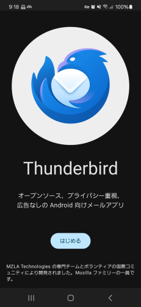
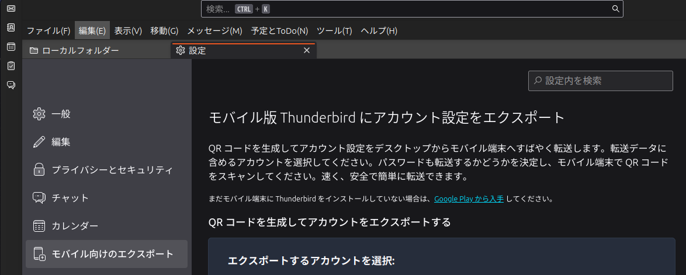
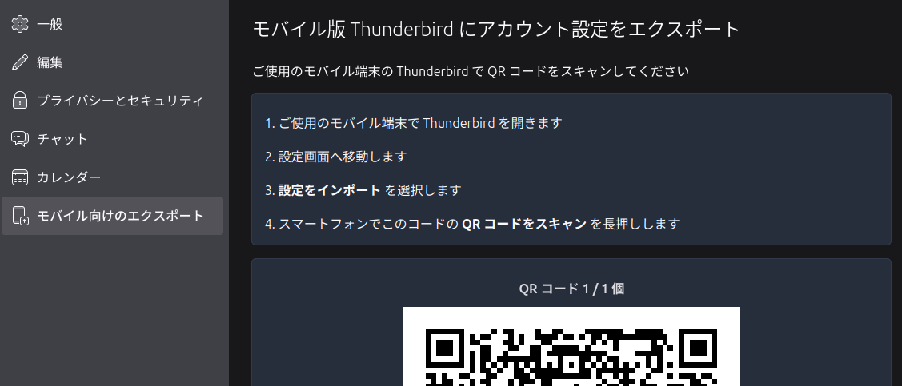

Android 版 Thunderbird を導入する

K-9 ベースの Andorid 版 Thunderbird がようやく正式リリースとなったようだ。
Android 版のメールソフトは大昔に K-9 や初期の Thunderbird も使ったことがあるけど，見た目や使い勝手がイマイチで削除したんだよな。 更にコミュニケーション手段としての電子メールの需要が落ちてきたこともあって Android 機では標準の Gmail 以外は使わなくなった。
あれから状況が変わってきて，特に Google/Gmail への（プライバシー方面の）信頼性が地に落ちたこともあり，現在 Gmail アカウントへの依存を減らして他の ISP のメールサービスに切り替えつつある。 まぁ，思いついたときにぼちぼちという感じではあるが。
そこで Andorid 機でも使える Gmail 以外のメールソフトが欲しいなぁ，と思ってたのよ。
K-9 ベースの Andorid 版 Thunderbird についてはだいぶ前から注目していたが進捗が捗々しくなく最近は諦め気味であったが（ベータ版には興味がない），ようやく正式リリースに到達したようで，まずはめでたし。
さっそくインストールしてみよう。

{kind=link}
すでに PC 版 Thunderbird (v128.4 以降) を使っているのであれば QR コードを使ってアカウント情報を Andorid 版 Thunderbird にインポートできる。
PC 版 Thunderbird から設定をエクスポートするにはメニューの「編集」→「設定」を開いて「モバイル向けのエクスポート」を開く。

{kind=link}
ここでエクスポートしたいアカウントを選択して [エクスポート] ボタンを押すと QR コードが表示される。

{kind=link}
これを Andorid 版 Thunderbird 側で読み込めばよい（設定 → 設定をインポート でインポートできる）。 アカウントのインポートは仕組み上は複数一度にできるが，アカウントの数が増えると QR コードの読み取りに失敗するみたいなので，ひとつずつインポートしていくのが無難だろう。
これで準備完了。 使い勝手についてはおいおい検証していこう。 とりあえず OpenPGP 暗号化機能が組み込まれていることは（設定から）確認できた。